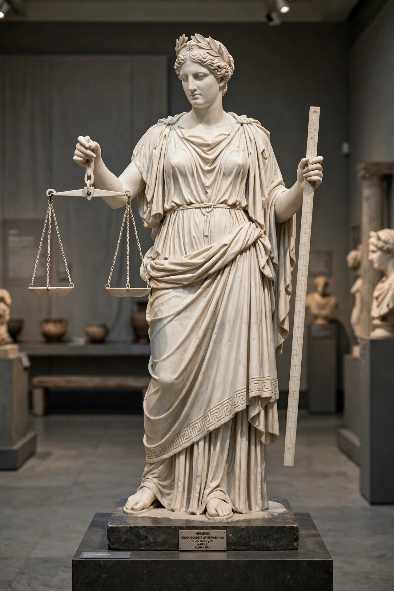

From Wikipedia, the free encyclopedia
| Nemesis | |
|---|---|
| Affiliation | Greek mythology; goddess of retribution and the balance of fortune |
| Parent | Nyx (Night), in Hesiod |
| Function | Distributes fortune as deserved; punishes hubris and excess |
| Chief sanctuary | Rhamnous, Attica |
| Symbols | Wheel, sword, bridle, measuring rod, apple branch |

In Greek mythology, Nemesis is the goddess of retribution and due measure: the power that distributes fortune according to desert and cuts down the excessive — the bloated pride, luck and wealth that the Greeks called hubris when it forgot its limits. Daughter of Night in Hesiod, she is less a character with adventures than a law of the moral universe personified, invoked wherever a story needs its reckoning: Croesus's fall, Narcissus's doom (in some tellings she answers the prayer of a scorned lover and brings the beautiful boy to his pool), and the wheel of fortune she carries, which turns for everyone.
Her chief sanctuary stood at Rhamnous in Attica, where her temple housed a statue by the school of Phidias carved — the proud local story said — from the block of Parian marble the Persians had brought to make their victory trophy, certain of a conquest Nemesis did not permit: the goddess's own myth in stone. Pausanias describes her image crowned and holding an apple branch and a cup, attended by Aidos (Shame/Modesty), her companion. In the Hellenistic world she merged with Tyche and the Adrasteia of Phrygia, and Rome took her into the amphitheatre and the camp — Nemesis of the arena, patroness invoked by gladiators — a long way from Attic moral philosophy, but true to her logic: all luck is audited in the end.
"Nemesis" passed into English as the name of any agent of deserved downfall — the archenemy whose existence balances the hero — a usage that keeps her oldest sense: not random punishment but the shape fate takes when excess demands correction. The hypothetical star Nemesis, proposed in 1984 as the sun's dark companion causing periodic extinctions, borrowed her name for astronomy's own reckoning.
Greek mythology · Hera · Persephone · Existential risk (a modern echo of reckoning)